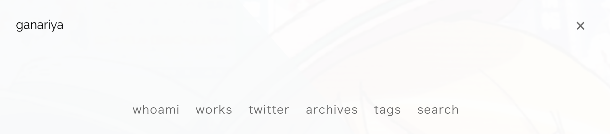

はじめに
hexoの導入で引っかかりやすい点についてまとめました。
今回は、自分が必要なコマンド集やプラグインのまとめを行おうと思います。
コマンド集
ページ生成
1 | hexo new post "hello_world" |
hello_worldというポストを作成します。
これ紛らわしいんですが
postは投稿
pageは固定ページになっています。
1 | hexo new diary --path diary/2020-01-01 |
/scaffoldsのdiary.mdをもとに
/source/_posts/diary/2020-01-01.mdを作成します。
ポストが大きくなるときは、–pathを設定することである特定のディレクトリにファイルを作成することができます。
1 | hexo new page "tags" |
tagsとよばれる固定ページを作成します。
diasporaのmenuに設定することで、固定ページにできます。

このような部分に表示できます。
ページ表示
1 | hexo server |
サーバーを立ててlocalhostでチェックできます。
このコマンドを打てば、自動で毎回js, css, mdなどもすべて毎回読み直してくれるので
hexo serverを何回も打つ必要はありません（僕はなんとなく打ってしまっていますが）
1 | hexo deploy -g |
ページ生成しながらデプロイします。
プラグイン紹介
現在使用しているプラグインを紹介していきます。
1 | { |
hexo-github-card
GitHub Cardを表示するリポジトリのようです。
設定は以下のようです。
1 | {% githubCard user:your_user [repo:your_repo] [width:400] [height:200] [theme:default] [client_id:your_client_id] [client_secret:your_client_secret] [align:text-align_position] %} |
hexo-pdf
PDFを表示するプラグインです。
1 | normal |
hexo-tag-link-preview
URLを展開してくれるプラグインです。
![](https://qiita-user-contents.imgix.net/https%3A%2F%2Fcdn.qiita.com%2Fassets%2Fpublic%2Fogp-background-1150d8b18a7c15795b701a55ae908f94.png?ixlib=rb-1.2.2&w=1200&mark=https%3A%2F%2Fqiita-user-contents.imgix.net%2F~text%3Fixlib%3Drb-1.2.2%26w%3D840%26h%3D380%26txt%3D%25E5%25B9%25B3%25E6%2588%2590%25E3%2581%25AE%25E3%2581%2586%25E3%2581%25A1%25E3%2581%25AB%25E3%2582%2584%25E3%2582%2581%25E3%2581%259F%25E3%2581%258B%25E3%2581%25A3%25E3%2581%259F%25E3%2580%258EIT%25E3%2581%25AE7%25E3%2581%25A4%25E3%2581%25AE%25E7%2584%25A1%25E6%2584%258F%25E5%2591%25B3%25E3%2581%25AA%25E7%25BF%2592%25E6%2585%25A3%25E3%2580%258F%26txt-color%3D%2523333%26txt-font%3DAvenir-Black%26txt-size%3D54%26txt-clip%3Dellipsis%26txt-align%3Dcenter%252Cmiddle%26s%3D1d30dfd2d3f6db7aced0dcd51125bdf9&mark-align=center%2Cmiddle&blend=https%3A%2F%2Fqiita-user-contents.imgix.net%2F~text%3Fixlib%3Drb-1.2.2%26w%3D840%26h%3D500%26txt%3D%2540spaces%26txt-color%3D%2523333%26txt-font%3DAvenir-Black%26txt-size%3D45%26txt-align%3Dright%252Cbottom%26s%3Dbc1683f432e35688dd19322d95eecdd4&blend-align=center%2Cmiddle&blend-mode=normal&s=6287de88072551cd97fa9b87a42d829b)
1 | {% linkPreview https://www.amazon.com/ _blank nofollow %} |
hexo-tag-niconico
ニコニコ動画のリンクを貼ってくれるプラグインです。
1 | {% douga sm36035671 %} |
hexo-tag-soundcloud
サウンドクラウドのリンクを貼ってくれるプラグインです。
hexo-tag-twitter
ツイートを展開してくれるプラグインです。
1 | {% twitter https://twitter.com/ganariya/status/1212375099380133888 %} |
hexo-wordcount
単語数などのカウントプラグインです。
まだ設定してないです。
hexo-asset-link
markdown表記で画像をはれるプラグインです。
post_asset_folderはtrueにすると便利になります。
hexo-easy-tags-plugin
タグの曖昧表記を一括にしてくれます。
これ便利です＞＜
hexo-generator-feed
feed系を作成するリポジトリです。
これを使ってsearchページを作っています。
hexo-generator-search
サーチページを作るためのプラグインです。
https://yoshinorin.net/2018/11/15/implement-search-feature-to-hexo/
こちらのページを参考にして、適宜バグを修正して利用させていただいています。
hexo-include-markdown
文章中に他のマークダウンを挿入します。
テンプレートエンジンのように、マークダウンを分割して使いまわして利用できます。
定型文やJupyterNotebookなどで利用することが考えられます。
を本文中に書くことで読み込めるようです。
読み込まれるパスはsource/_template/teamplate.mdとなるため、
アセットをtrueにしていて、ここから読み出したいんですが、どうしましょうか･･･
最後に
プラグインとコマンドをまとめました。
適宜修正していこうと思います。
ご不明な点がありましたら、コメントいただければ幸いです！